MITFree & open source — every feature, foreverمجاني ومفتوح المصدر، بكل الميزات، إلى الأبد
Design anything. Pay nothing.Keep everything.صمّم ما تريد. بلا اشتراك،وتصاميمك ملكك.
OpenCanvas is a free, open-source design editor you run yourself: photo frames, crop, about 2,900 icons,
brand kits, multi-page designs and professional exports. No subscriptions, no premium tier, no account. Your
designs never leave your device.
OpenCanvas محرّر تصاميم مجاني ومفتوح المصدر تشغّله بنفسك: إطارات للصور، وقصّ، ونحو 2900 أيقونة، وحزم هوية،
وتصاميم متعددة الصفحات، وتصدير احترافي. لا اشتراكات ولا باقات مميّزة ولا حسابات، ولا تغادر تصاميمك جهازك أبدًا.
33shapes, plus stars & badgesشكلًا إضافةً إلى النجوم والشارات
30Arabic font familiesعائلة خطوط عربية
530+automated testsاختبارًا آليًا
Why OpenCanvasلماذا OpenCanvas؟
Everything the paid design platforms do — free, on your own machine.كل ما تقدّمه منصات التصميم المدفوعة، مجانًا وعلى جهازك أنت.
Online design tools are great until you hit the paywall: the frame you wanted is Pro, the transparent export is
Pro, the brand kit is Pro. OpenCanvas takes the opposite approach: build it in the open, give every feature to
everyone, and let you keep your work.
أدوات التصميم على الإنترنت رائعة حتى تصطدم بجدار الدفع: الإطار الذي أردته للمشتركين فقط، والتصدير بخلفية شفافة
للمشتركين، وحزمة الهوية للمشتركين. أمّا OpenCanvas فيسلك الطريق المعاكس: يُبنى في العلن، ويمنح كل ميزة للجميع،
ويترك أعمالك بين يديك.
Free. Actually free.مجاني فعلًا
No trials, no watermarks, no “Pro” crown on the feature you need. Everything in the editor is available to
everyone.
لا فترات تجريبية ولا علامات مائية ولا تاج «Pro» على الميزة التي تحتاجها. كل ما في المحرّر متاح للجميع.
Host it yourselfاستضِفه بنفسك
Run it on your laptop with two commands, or on your own server with Docker for your team, school or company.
شغّله على حاسوبك بأمرين، أو على خادمك الخاص عبر Docker لفريقك أو مدرستك أو شركتك.
Your designs stay with youتصاميمك تبقى عندك
Designs and uploads are saved in your browser, on your own device. No account, no upload to anyone's cloud,
no one looking at your work.
تُحفَظ التصاميم والصور المرفوعة في متصفحك على جهازك. لا حساب، ولا رفع إلى سحابة أحد، ولا أحد يطّلع على أعمالك.
Open source, MITمفتوح المصدر برخصة MIT
Read every line, change anything, fork it, translate it, build a business on it. The MIT license makes it
truly yours.
اقرأ كل سطر، وعدّل ما تشاء، وانسخه، وترجمه، وابنِ عليه مشروعك التجاري. رخصة MIT تجعله ملكك حقًا.
EKإ.ق
Ehab Kahwatiإيهاب قهواتي
Creator of OpenCanvasمؤسّس OpenCanvas
Why I built thisلماذا بنيت هذا المشروع
We can build our own tools — and own them.نستطيع أن نبني أدواتنا بأنفسنا، وأن نملكها.
I believe software is something we have a right to: all of it, with every feature, for free.
Whatever tool exists online today, we can build one just like it, use it for free and keep our data
private. We don't have to accept a monthly bill and someone else's cloud as the price of being creative.
I want us to be builders, not just consumers: people who make things that belong to us, instead of
renting them one subscription at a time.
And for the first time, that dream is within reach. With the power of AI, a small team, even one
determined person, can build what used to take an entire company. OpenCanvas is my proof. Now it's yours,
too.
— Ehab Kahwati, creator of OpenCanvas
أؤمن بأن البرمجيات حقٌّ لنا جميعًا: أن نحصل عليها مجانًا، بكل ميزاتها، دون أن يُحجَب عنّا شيء.
أيّ برنامج تراه اليوم على الإنترنت، نستطيع أن نبني مثله تمامًا، ونستخدمه مجانًا، ونحافظ على خصوصية بياناتنا.
لسنا مضطرين إلى قبول فاتورة شهرية وسحابةٍ لا نملكها ثمنًا لإبداعنا.
أريد أن نكون صنّاعًا لا مستهلكين فحسب؛ أن نبني أشياء تخصّنا نحن، بدل أن نستأجرها اشتراكًا بعد اشتراك.
واليوم، ولأول مرة، صار هذا الحلم في متناول أيدينا. فبقوة الذكاء الاصطناعي يستطيع فريق صغير، بل شخص واحد عازم
على هدفه، أن يبني ما كان يحتاج إلى شركة كاملة. OpenCanvas هو دليلي على ذلك، وهو الآن لك أيضًا.
— إيهاب قهواتي، مؤسّس OpenCanvas
See it in actionشاهده أثناء العمل
Real features, recorded from the real app.ميزات حقيقية، مسجّلة من التطبيق نفسه.
Every animation below is a screen recording of OpenCanvas running in a browser. No mockups.
كل صورة متحركة أدناه تسجيلٌ للشاشة من OpenCanvas وهو يعمل في المتصفح، لا تصاميم وهمية.
Photo framesإطارات الصور
Drag a photo onto a heart, a circle, a Polaroid, a film strip or a phone mockup and it takes the frame's shape
instantly. Drag another photo over it to swap.
اسحب صورة إلى قلب أو دائرة أو صورة بولارويد أو شريط أفلام أو شاشة هاتف، فتأخذ شكل الإطار فورًا. ولتبديلها اسحب
صورة أخرى فوقها.
Shapes, Polaroids, film strips, collage grids and device mockupsأشكال وصور بولارويد وأشرطة أفلام وشبكات كولاج وإطارات أجهزة
The photo stays editable: reposition or replace it any timeتبقى الصورة قابلة للتعديل: غيّر موضعها أو استبدلها متى شئت
Upload by drag and drop, with folders for your imagesارفع الصور بالسحب والإفلات، ونظّمها في مجلدات
OpenCanvas
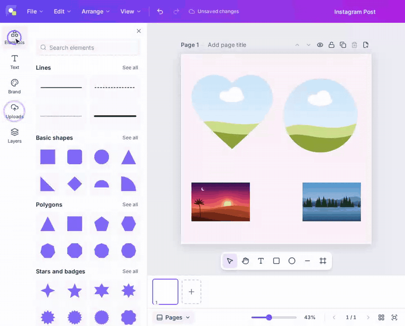
Crop like a proقصّ احترافي للصور
Double-click a photo to crop it: drag the image inside its frame, scale it from the corners and press Done.
The original is never lost, so you can reset whenever you like.
انقر نقرًا مزدوجًا على صورة لقصّها: اسحبها داخل إطارها، وكبّرها من الزوايا، ثم اضغط «تم». لا تضيع الصورة الأصلية
أبدًا، ويمكنك استعادتها متى شئت.
Works on photos and on photos inside framesيعمل على الصور وعلى الصور داخل الإطارات
Non-destructive: the full image is always keptقصّ غير إتلافي: تُحفَظ الصورة كاملة دائمًا
Finish with a double-click or the Enter keyأنهِ القصّ بنقرة مزدوجة أو بمفتاح Enter
OpenCanvas
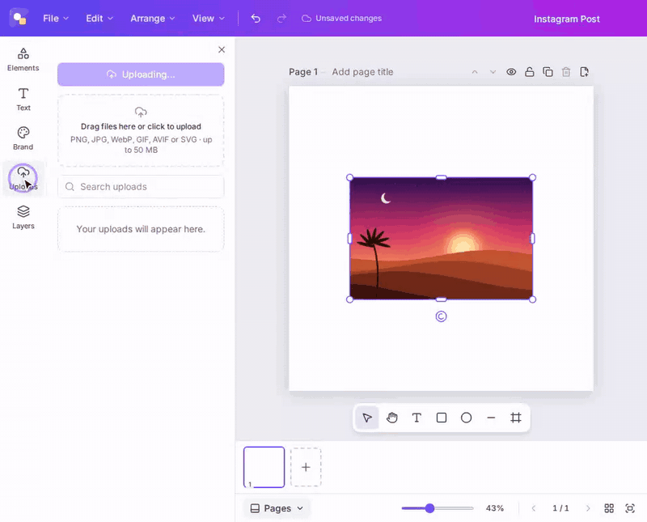
Shapes, lines and ~2,900 iconsأشكال وخطوط ونحو 2900 أيقونة
Pick from 33 shapes, stars and badges, 12 line styles and the complete Lucide and Tabler icon sets. Search in
English or Arabic: “rocket” and “صاروخ” both work.
اختر من بين 33 شكلًا ونجومًا وشارات و12 نمطًا للخطوط، ومكتبتَي Lucide وTabler كاملتين. وابحث بالعربية أو
الإنجليزية: «صاروخ» و«rocket» كلاهما يعمل.
Every element is a vector you can recolor and resizeكل عنصر رسم متجهي يمكنك تغيير لونه وحجمه
Recently used items are one click awayالعناصر المستخدمة مؤخرًا على بُعد نقرة
Arrows, callouts and frames in the same panelالأسهم وفقاعات الكلام والإطارات في اللوحة نفسها
OpenCanvas
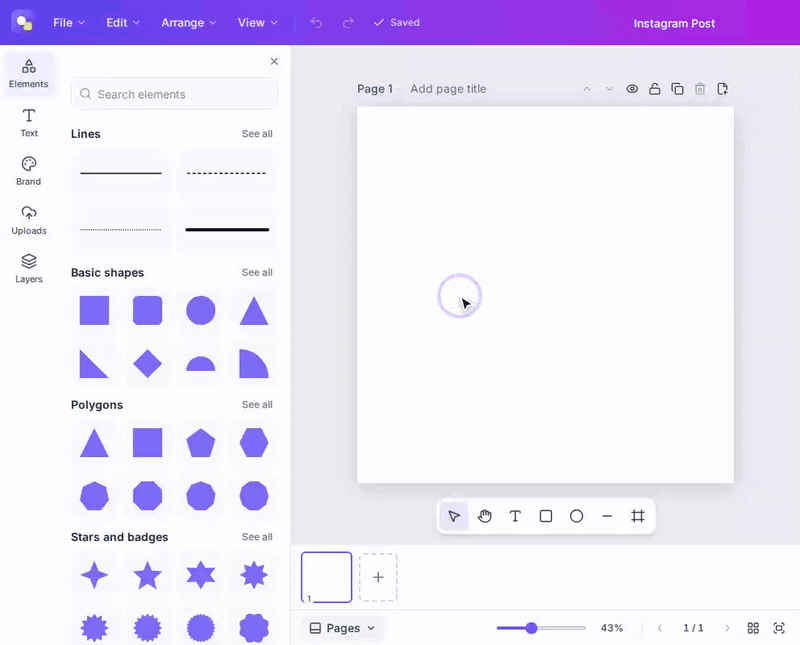
Multi-page designsتصاميم متعددة الصفحات
Build presentations, carousels and documents. Switch between a single page, thumbnails, continuous scroll and a
grid of every page, then rename, reorder, hide, lock or duplicate any page.
أنشئ عروضًا تقديمية ومنشورات متعددة الشرائح ومستندات. انتقل بين عرض الصفحة الواحدة والصور المصغّرة والتمرير
المتواصل وشبكة تضم كل الصفحات، ثم سمِّ أي صفحة أو رتّبها أو أخفِها أو أقفِلها أو كرّرها.
Four page views, just like the big platformsأربعة أوضاع لعرض الصفحات، كما في المنصات الكبيرة
Page titles and per-page actionsعناوين للصفحات وإجراءات خاصة بكل صفحة
Hidden pages are skipped on exportتُستثنى الصفحات المخفية عند التصدير
OpenCanvas
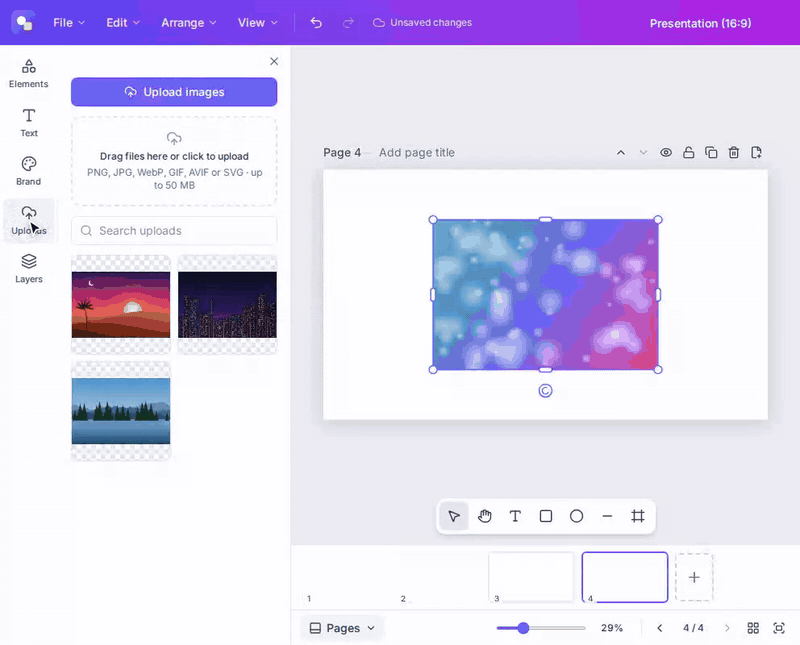
Pro exports, no paywallتصدير احترافي بلا جدار دفع
PNG, JPEG and WebP at any size, transparent backgrounds, compressed PNGs or a maximum file size; SVG with
embedded fonts; PDF and print PDF; and multi-page ZIPs. The features others charge for are simply there.
ملفات PNG وJPEG وWebP بأي مقاس، وخلفيات شفافة، وملفات PNG مضغوطة أو بحجم أقصى تحدّده، وSVG مع تضمين الخطوط،
وPDF عادي وPDF للطباعة، وملفات ZIP للتصاميم متعددة الصفحات. ما يتقاضى الآخرون ثمنه موجود هنا ببساطة.
Export every page or pick the ones you needصدّر كل الصفحات أو اختر ما تحتاج منها
Save as .opencanvas to keep everything editableاحفظ بصيغة .opencanvas ليبقى كل شيء قابلًا للتعديل
Rendered on your device; nothing is uploadedيجري التصدير على جهازك، ولا يُرفَع شيء
OpenCanvas
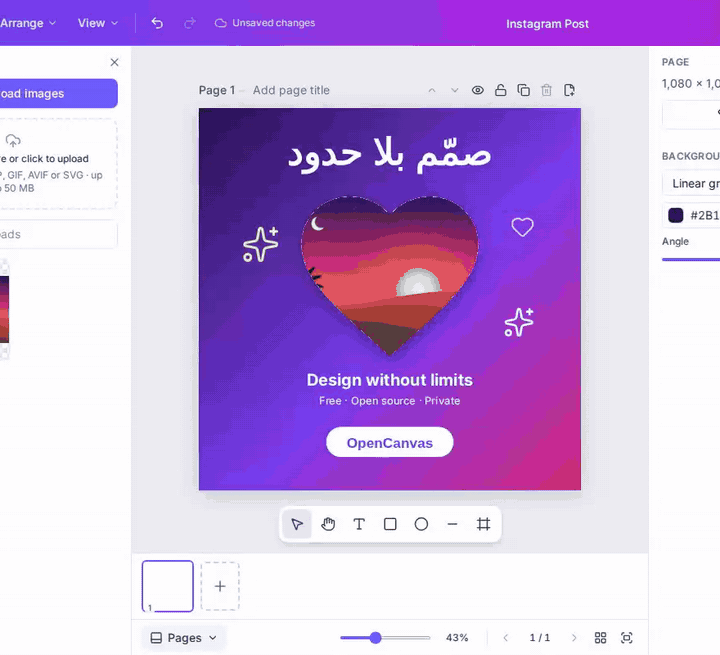
Brand kitsحزم الهوية
Keep your logos, colors and fonts in one place and apply them in a click. Create as many brand kits as you need:
for yourself, your clients or each project.
اجمع شعاراتك وألوانك وخطوطك في مكان واحد وطبّقها بنقرة. وأنشئ ما تشاء من حزم الهوية: لنفسك أو لعملائك أو لكل
مشروع.
Brand voice notes and brand templatesإرشادات لأسلوب العلامة وقوالب خاصة بها
Folders to organize designs and uploadsمجلدات لتنظيم التصاميم والصور المرفوعة
OpenCanvas
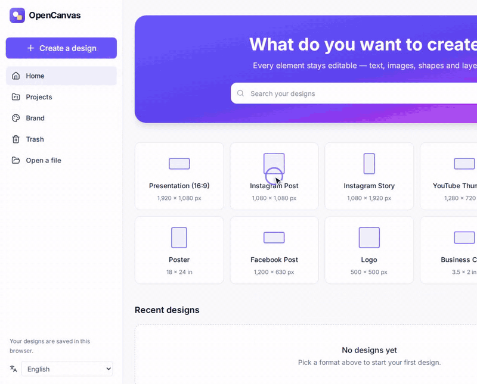
Rulers, guides and snappingمساطر وأدلة ومحاذاة تلقائية
Add a 3×3 grid of guides in one click, drag new guides straight from the rulers, and watch elements snap into
place. Precise layouts without the fiddling.
أضِف شبكة أدلة 3×3 بنقرة واحدة، واسحب أدلة جديدة من المساطر مباشرة، وشاهد العناصر تلتصق في مكانها بدقة. تخطيطات
محكمة دون عناء.
Presets for 12 columns, 3 columns and grids, with gutters and marginsقوالب جاهزة لـ 12 عمودًا و3 أعمدة والشبكات، مع الفواصل والهوامش
Smart alignment to other elements and to the pageمحاذاة ذكية مع العناصر الأخرى ومع الصفحة
Guides are saved with each pageتُحفَظ الأدلة مع كل صفحة
OpenCanvas
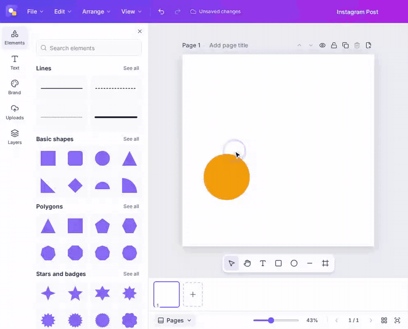
70 formats, ready to go70 مقاسًا جاهزًا
Instagram posts and stories, TikTok, YouTube thumbnails, presentations, A4 and US Letter documents, posters,
business cards, whiteboards and more, or a custom size in pixels, millimeters or inches.
منشورات إنستغرام وقصصه، وتيك توك، وصور يوتيوب المصغّرة، والعروض التقديمية، ومستندات A4 وLetter، والملصقات،
وبطاقات العمل، والسبورات البيضاء، وغيرها، أو مقاس مخصّص بالبكسل أو المليمتر أو البوصة.
Browse by category and by platformتصفّح حسب الفئة والمنصة
Search every format instantlyابحث في كل المقاسات فورًا
Print sizes export at exact 300 DPI dimensionsتُصدَّر مقاسات الطباعة بأبعاد دقيقة بدقة 300 DPI
OpenCanvas
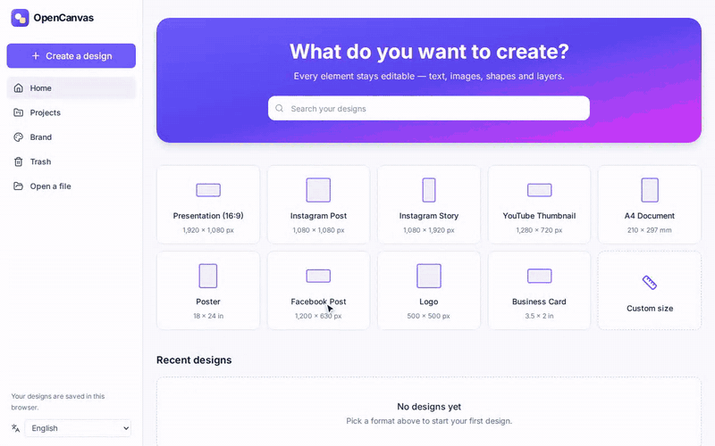
Arabic, done properlyعربية كما يجب
A fully mirrored right-to-left interface, correct letter shaping, Arabic, English and numbers mixed on the same
line, Arabic justification and 30 Arabic font families. Built in from day one, not bolted on.
واجهة كاملة من اليمين إلى اليسار، ووصلٌ صحيح للحروف، ونصوص تمزج العربية والإنجليزية والأرقام في السطر نفسه،
ومحاذاة كاملة للفقرات العربية، و30 عائلة خطوط عربية. دعمٌ أصيل منذ اليوم الأول، لا إضافة لاحقة.
Unicode bidi for mixed-direction textخوارزمية Unicode لثنائية الاتجاه في النصوص المختلطة
Arabic lists and correct line breakingقوائم عربية وكسر صحيح للأسطر
Icon search in Arabicبحث عن الأيقونات بالعربية
OpenCanvas
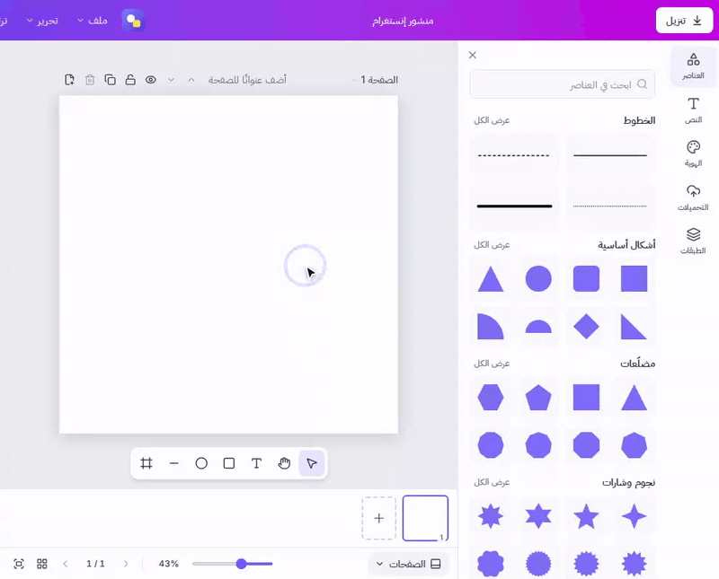
And much moreوالمزيد
A complete editor, not a demoمحرّر متكامل، لا نسخة تجريبية
Rich text engineمحرّك نصوص متكامل
Real text layout with wrapping, lists, letter and line spacing, effects and web fonts.
Saved instantly to your browser. Close the tab mid-edit and nothing is lost; two tabs never overwrite each other.
يُحفَظ عملك فورًا في المتصفح. أغلق التبويب في منتصف التعديل ولن يضيع شيء، ولن يكتب تبويب فوق آخر.
Keyboard and accessibilityلوحة المفاتيح وسهولة الوصول
Shortcuts for everything, keyboard-only editing and WCAG 2.1 AA checks in every test run.
اختصارات لكل شيء، وتحرير كامل من لوحة المفاتيح، وفحوص WCAG 2.1 AA في كل تشغيل للاختبارات.
Open file formatصيغة ملفات مفتوحة
Designs are structured, documented JSON, never flattened images. Your work is portable.
التصاميم مستندات JSON منظّمة وموثّقة، لا صور مسطّحة، فتبقى أعمالك قابلة للنقل.
Ready for AIجاهز للذكاء الاصطناعي
Editing commands export as tool definitions, so AI agents can edit real designs instead of generating flat
pictures.
تُصدَّر أوامر التحرير تعريفاتٍ للأدوات، فيعدّل وكلاء الذكاء الاصطناعي تصاميم حقيقية بدل توليد صور مسطّحة.
Plugins, fonts and iconsإضافات وخطوط وأيقونات
Upload your own fonts and SVG icons, or install plugins that add commands, panels and icon packs. Plugins
run in a sandbox with the permissions you approve.
ارفع خطوطك وأيقوناتك بصيغة SVG، أو ثبّت إضافات تضيف أوامر ولوحات وحزم أيقونات. وتعمل الإضافات في بيئة معزولة
بالصلاحيات التي توافق عليها.
Screenshotsلقطات الشاشة
A closer lookنظرة أقرب
localhost:3000
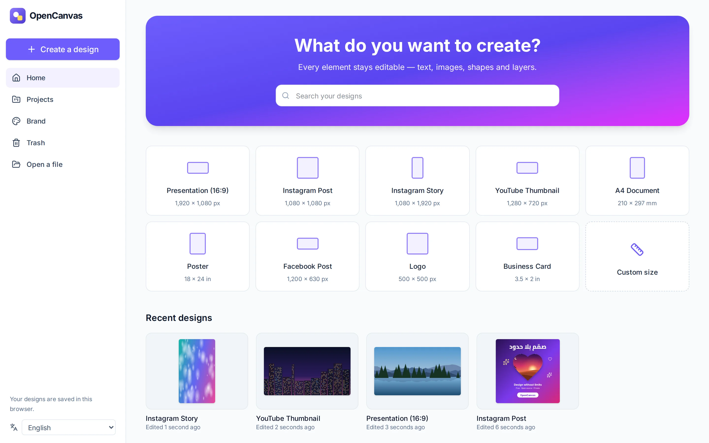
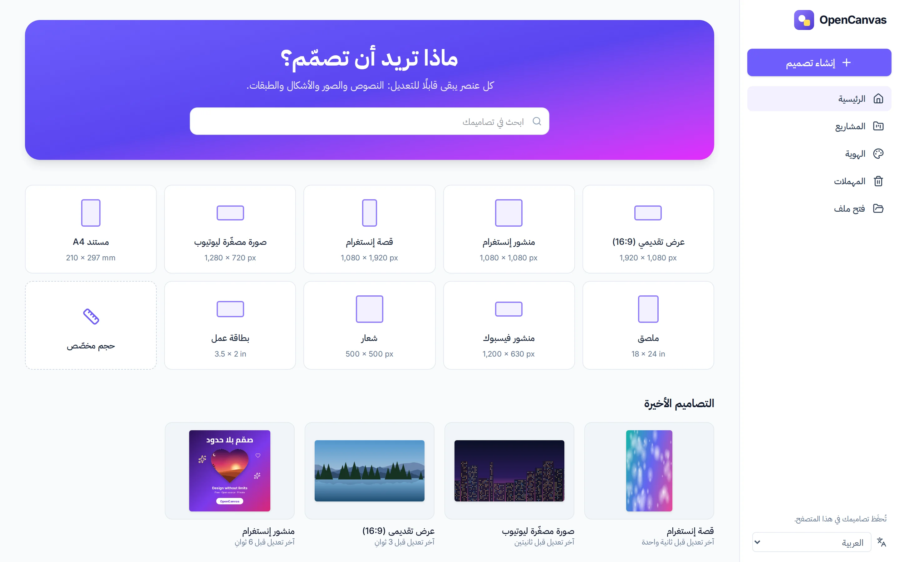
Your designs, folders and uploads, all stored locally.تصاميمك ومجلداتك وصورك المرفوعة، كلها محفوظة محليًا.
localhost:3000
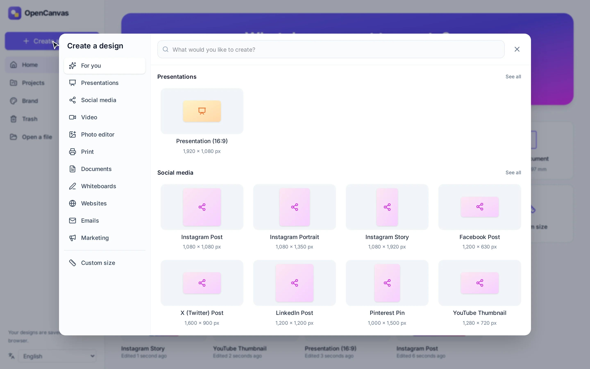
Create a design: 70 formats by category and platform.إنشاء تصميم: 70 مقاسًا مصنّفة حسب الفئة والمنصة.
localhost:3000/brand
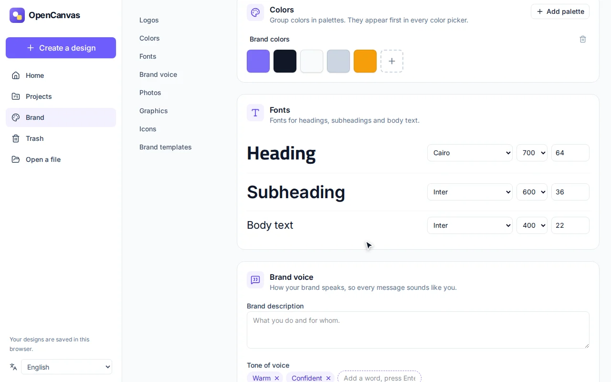
Brand kits with logos, colors and fonts.حزم الهوية: شعارات وألوان وخطوط.
localhost:3000/design
The same editor in Arabic, fully right-to-left.المحرّر نفسه بالواجهة الإنجليزية.
The honest comparisonمقارنة صريحة
Why pay for what you can own?لماذا تدفع ثمن ما يمكنك امتلاكه؟
Topicالبند
Typical paid design platformsمنصات التصميم المدفوعة عادةً
OpenCanvas
Priceالسعر
Limited free tier; premium features need a monthly subscriptionباقة مجانية محدودة، والميزات المميّزة باشتراك شهري
Free. Every feature, foreverمجاني، بكل الميزات، دائمًا
Locked featuresالميزات المحجوبة
Transparent exports, brand kits, many frames and elementsالتصدير بخلفية شفافة وحزم الهوية وكثير من الإطارات والعناصر
None. Nothing is lockedلا شيء محجوب
Where your designs liveأين تُحفَظ تصاميمك
On the company's serversعلى خوادم الشركة
On your deviceعلى جهازك
Accountالحساب
Requiredإلزامي
Not neededغير مطلوب
Self-hostingالاستضافة الذاتية
Not possibleغير ممكنة
Two commands, or Dockerبأمرين، أو عبر Docker
Source codeالشيفرة المصدرية
Closedمغلقة
Open, MIT licenseمفتوحة برخصة MIT
If the service shuts downإذا توقّفت الخدمة
Your library may go with itقد تخسر مكتبتك معها
Your files and the app stay yoursتبقى ملفاتك والتطبيق نفسه ملكك
Being honest: the big platforms still have things we don't yet: huge template and stock photo
libraries, real-time collaboration and video editing. They are all on our roadmap, and every contribution brings
them closer.
بصراحة: ما زالت المنصات الكبيرة تتفوّق في أمور لم نصل إليها بعد، مثل المكتبات الضخمة من القوالب
والصور الجاهزة، والتعاون اللحظي، وتحرير الفيديو. كلها على خارطة طريقنا، وكل مساهمة تقرّبنا منها.
Get startedابدأ الآن
Up and running in two minutesجاهز للعمل خلال دقيقتين
Clone the repository, install and start. OpenCanvas opens in your browser at
localhost:3000, and everything runs on your machine.
انسخ المستودع، وثبّت الحزم، وشغّله. يفتح OpenCanvas في متصفحك على العنوان localhost:3000، وكل شيء
يعمل على جهازك.
Node.js 22 or newerNode.js الإصدار 22 أو أحدثnodejs.org
pnpm 10Through Corepack, which ships with Nodeعبر Corepack المرفقة مع Node
GitTo clone the repositoryلنسخ المستودع
Or just Dockerأو Docker فقطNo Node.js needed; ideal for serversدون الحاجة إلى Node.js، وهو الأنسب للخوادم
1Install Node.js 22+ (skip if you have it)ثبّت Node.js 22 أو أحدث (تخطَّ هذه الخطوة إن كان مثبّتًا)
brew install node # or use the installer from nodejs.org
2Enable pnpmفعّل pnpm
corepack enable
Permission error? Run sudo corepack enable, or install pnpm directly with
sudo npm install -g pnpm@10.28.0.
ظهر خطأ في الصلاحيات؟ شغّل sudo corepack enable، أو ثبّت pnpm مباشرة بالأمر
sudo npm install -g pnpm@10.28.0.
3Clone and startانسخ المستودع وشغّله
git clone https://github.com/Devehab/OpenCanvas.git
cd OpenCanvas
pnpm install
pnpm dev
Open http://localhost:3000 and start designing.افتح http://localhost:3000 وابدأ التصميم.
1Install Node.js 22+ with nvm (or your package manager)ثبّت Node.js 22 أو أحدث عبر nvm (أو مدير الحزم في نظامك)
curl -o- https://raw.githubusercontent.com/nvm-sh/nvm/v0.40.3/install.sh | bash
# open a new terminal, then:
nvm install 22
2Enable pnpmفعّل pnpm
corepack enable
3Clone and startانسخ المستودع وشغّله
git clone https://github.com/Devehab/OpenCanvas.git
cd OpenCanvas
pnpm install
pnpm dev
Open http://localhost:3000 and start designing.افتح http://localhost:3000 وابدأ التصميم.
1Install Node.js and Git (PowerShell)ثبّت Node.js وGit (من PowerShell)
2Enable pnpm (PowerShell as Administrator)فعّل pnpm (من PowerShell بصلاحيات المسؤول)
corepack enable
3Clone and start (a new terminal)انسخ المستودع وشغّله (في نافذة طرفية جديدة)
git clone https://github.com/Devehab/OpenCanvas.git
cd OpenCanvas
pnpm install
pnpm dev
Open http://localhost:3000 and start designing.افتح http://localhost:3000 وابدأ التصميم.
1Clone the repositoryانسخ المستودع
git clone https://github.com/Devehab/OpenCanvas.git
cd OpenCanvas
2Build and start the containerابنِ الحاوية وشغّلها
docker compose up -d --build
Another port? PORT=8080 docker compose up -d --build. Guides for Coolify and Hetzner are in
docs/deployment.md.
تريد منفذًا آخر؟ PORT=8080 docker compose up -d --build. وتجد أدلة النشر على Coolify وHetzner في
docs/deployment.md.
Open http://localhost:3000, or your server's address.افتح http://localhost:3000 أو عنوان خادمك.
Contributeساهِم معنا
Build it with usابنِه معنا
OpenCanvas is built in the open. Whether you write code, design, translate or test, there is a place for you,
and AI tools make your first contribution easier than ever.
يُبنى OpenCanvas في العلن. وسواء كنت تكتب الشيفرة أو تصمّم أو تترجم أو تختبر، فهناك مكان لك، وأدوات الذكاء
الاصطناعي تجعل مساهمتك الأولى أسهل من أي وقت مضى.
Fork and cloneانسخ المستودع إلى حسابك
Fork the repository on GitHub, then clone your fork.
أنشئ نسخة (Fork) من المستودع على GitHub، ثم انسخها إلى جهازك.
A real design engine, not a template viewerمحرّك تصميم حقيقي، لا عارض قوالب
Designs are structured documents. Every change is a validated, undoable command, and one renderer draws the
editor, every export and the server-side tests. Collaboration and AI will build on the same foundation.
التصاميم مستندات منظَّمة، وكل تعديل أمرٌ موثّق يمكن التراجع عنه، ومحرّك رسم واحد يرسم المحرّر وكل عمليات التصدير
واختبارات الخادم. وعلى هذا الأساس نفسه سيُبنى التعاون والذكاء الاصطناعي.
UI─▶Commands─▶Transactions─▶Store─▶RendererReact validated atomic records Canvas2D
TypeScript
Next.js 16
React 19
Canvas 2D
Skia (Node)
IndexedDB
Tailwind CSS 4
Vitest
Playwright
Docker
coreDocument engineمحرّك المستنداتDocument model, schemas, commands, history and text layoutنموذج المستندات والمخطّطات والأوامر وسجلّ التعديلات وتخطيط النصوص
rendererRendererمحرّك الرسمCanvas2D rendering in the browser and in Nodeرسم Canvas2D في المتصفح وفي Node
exportExportالتصديرPNG, JPEG, WebP, SVG, PDF and .opencanvas filesملفات PNG وJPEG وWebP وSVG وPDF و.opencanvas
editorInteractionالتفاعلSelection, tools, snapping, keyboard and text editingالتحديد والأدوات والمحاذاة ولوحة المفاتيح وتحرير النصوص
webThe appالتطبيقNext.js dashboard and editor, local storage, English and Arabicلوحة التحكم والمحرّر بـ Next.js، والتخزين المحلي، والعربية والإنجليزية
Roadmapخارطة الطريق
Where we're goingإلى أين نتّجه
Phase 1 · Doneالمرحلة 1 · مكتملة
Editor engineمحرّك التحرير
The full design editor you see on this page.
محرّر التصميم الكامل الذي تراه في هذه الصفحة.
Phase 2المرحلة 2
Design platformمنصّة التصميم
Optional accounts and sync, sharing, templates, font upload and vector PDF.
Real-time co-editing, live cursors, comments and version history.
تحرير مشترك لحظي، ومؤشرات حيّة، وتعليقات، وسجلّ للإصدارات.
Phase 5المرحلة 5
AI that editsذكاء اصطناعي يحرّر
An assistant that edits your real design, with any provider or a local model.
مساعد يعدّل تصميمك الحقيقي، مع أي مزوّد أو نموذج محلي.
FAQ
Questions, answeredالأسئلة الشائعة
Is OpenCanvas really free?هل OpenCanvas مجاني فعلًا؟
Yes. It is open source under the MIT license, with no paid tier, no locked features, no watermark and no
trial. You can use it for personal and commercial work.
نعم. هو مشروع مفتوح المصدر برخصة MIT، بلا باقة مدفوعة ولا ميزات محجوبة ولا علامة مائية ولا فترة تجريبية،
ويمكنك استخدامه في أعمالك الشخصية والتجارية.
Where are my designs stored?أين تُحفَظ تصاميمي؟
In your browser's storage (IndexedDB), on your own device. Designs are not sent to any server, not even when
you export. To back up or move a design, save it as an .opencanvas file.
في مساحة التخزين الخاصة بمتصفحك (IndexedDB) على جهازك. لا تُرسَل التصاميم إلى أي خادم، حتى عند التصدير.
ولنسخ تصميم احتياطيًا أو نقله، احفظه ملفًا بصيغة .opencanvas.
Do I need an account or an internet connection?هل أحتاج إلى حساب أو اتصال بالإنترنت؟
No account at all. When you run OpenCanvas on your own machine, the editor, fonts and icons are all local,
so it doesn't need the internet.
لا حاجة إلى أي حساب. وعندما تشغّل OpenCanvas على جهازك، يكون المحرّر والخطوط والأيقونات كلها محلية، فلا
يحتاج إلى الإنترنت.
Can I host it for my team or company?هل يمكنني استضافته لفريقي أو شركتي؟
Yes. Deploy it with Docker on any server; the docs include guides for Coolify and Hetzner. Each person's
designs stay in their own browser. Shared accounts and sync are planned for Phase 2.
نعم. انشره عبر Docker على أي خادم، وفي التوثيق أدلة للنشر على Coolify وHetzner. تبقى تصاميم كل شخص في متصفحه
هو، أمّا الحسابات المشتركة والمزامنة فمخطّط لها في المرحلة الثانية.
Can I use my designs commercially?هل يمكنني استخدام تصاميمي تجاريًا؟
Yes. Your designs are yours. The bundled icons are ISC and MIT licensed and the bundled fonts use open
licenses (SIL OFL or Apache) that allow commercial use.
نعم، تصاميمك ملكك. الأيقونات المرفقة مرخّصة بـ ISC وMIT، والخطوط المرفقة برخص مفتوحة (SIL OFL أو Apache)
تسمح بالاستخدام التجاري.
How does it compare to online design platforms?كيف يُقارَن بمنصات التصميم على الإنترنت؟
The editing experience is familiar: frames, crop, elements, brand kits, page views and a Download dialog that
works the way you expect. The difference is that OpenCanvas is free, open and local. The comparison above
lists what is still missing.
تجربة التحرير مألوفة: إطارات وقصّ وعناصر وحزم هوية وأوضاع لعرض الصفحات ونافذة تنزيل تعمل كما تتوقّع. والفرق
أن OpenCanvas مجاني ومفتوح ويعمل على جهازك. وتجد في المقارنة أعلاه ما لم نصل إليه بعد.
Does it support Arabic?هل يدعم العربية؟
Fully: a mirrored right-to-left interface, proper letter shaping and bidirectional text, Arabic
justification, 30 Arabic font families and icon search in Arabic.
يدعمها دعمًا كاملًا: واجهة من اليمين إلى اليسار، ووصل صحيح للحروف، ونصوص ثنائية الاتجاه، ومحاذاة كاملة
للفقرات العربية، و30 عائلة خطوط عربية، وبحث عن الأيقونات بالعربية.
How can I help?كيف يمكنني المساعدة؟
Star the repository, share it with someone who pays for design tools, report bugs, translate, or pick an
issue. The Contribute section shows how to start.
امنح المستودع نجمة، وشاركه مع من يدفع اشتراكًا في أدوات التصميم، وأبلغ عن الأخطاء، وساعد في الترجمة، أو اختر
مهمة مفتوحة. ويشرح قسم المساهمة كيف تبدأ.
Stop renting your creativity.توقّف عن استئجار إبداعك.
Install OpenCanvas, keep your designs on your own device, and help build the free design platform everyone
deserves.
ثبّت OpenCanvas، واحتفظ بتصاميمك على جهازك، وساعدنا في بناء منصة التصميم المجانية التي يستحقها الجميع.